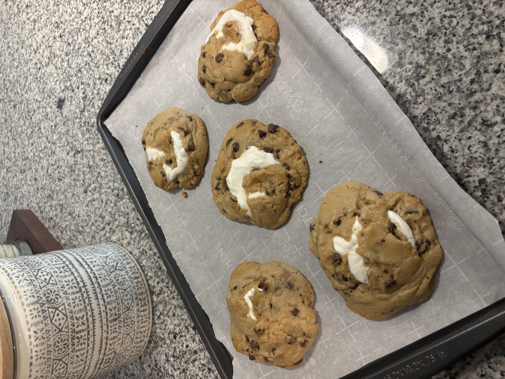

S'mores Cookies

Description
These cookies are a quick and easy way to impress any guest!
They can be ready in under 20 minutes and come out perfectly soft
and gooey everytime. This recipe makes 12 cookies. You will have
marshmallows and graham cracker left over.
Ingredients
- 1 30oz roll of Pillsbury Chocolate Chip Cookie Dough
- 1 14oz box of graham crackers
- 2 Hershey's milk chocolate bars
- 1 Bag of regular sized marshmallows
Steps
- Preheat your oven to 350 degrees fahrenheit.
- Set the cookie dough aside and allow it to soften while you prep the other ingredients.
- Line your baking sheet with parchment paper.
Break your graham crackers in half, and place them on your baking sheet, evenly spaced,
I usually fit 5 or 6 on one pan.
- Place 2 chocolate rectangles on each graham cracke.r
- Place one marshmallow on top of the chocolate.
- Now cut your cookie dough in 1 inch sections, and flatten each one out,
you should have a circle about 4 inches in diameter. Carefully place the
cookie dough over the smores you just made. I like to mold the cookie dough
around the smore to make sure it stays in place.
- Bake for 10 minutes, they will look raw still when you take them out, allow
them to cool for 5-10 minutes. They will continue cookie on the pan
even once you've taken them out of the oven.
- Enjoy!
These are amazing on their own, but pair well with vanilla ice cream!